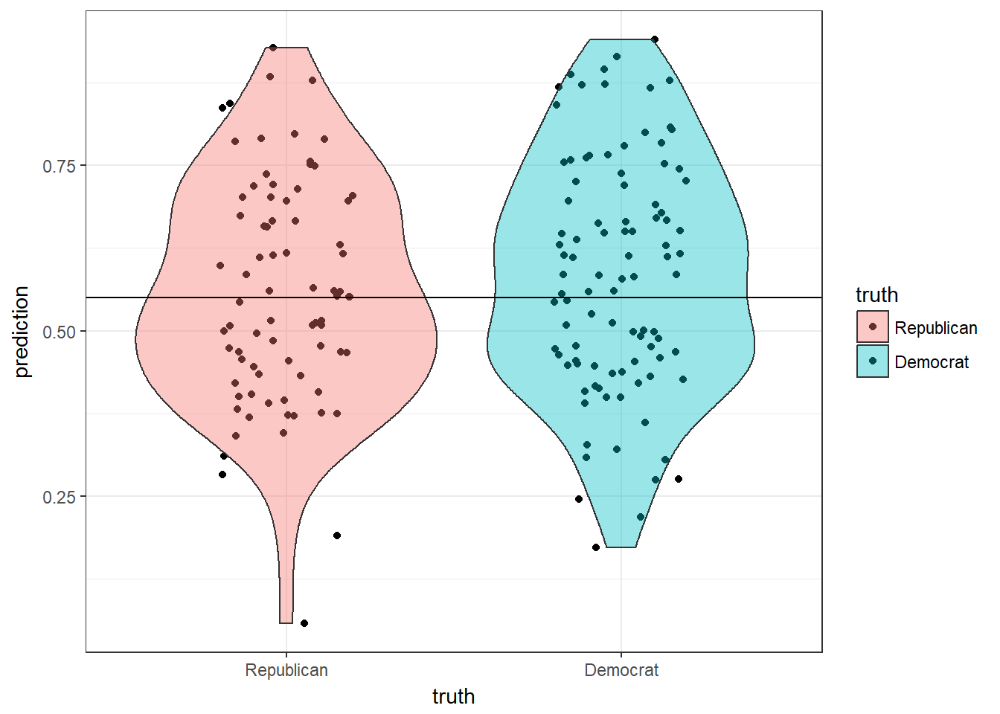

Fake News Project
Our goal for this project was to look at how different political parties viewed fakes news. Our data set was from the PEW Research center and it contained question such as “How well do you think you can determine a fake news story”. These type of questions are the PEW questions which are:
PEW1: How often do you come across news stories about politics that you think are not totally accurate?
PEW2: And how often do you come across news stories about politics that you think completely made up?
PEW3: Have you shared a news story you later found out was made up?
PEW4: Have you shared a news story you thought at the time was made up?
PEW5a: How much responsibility do members of the public have in trying to prevent made up stories from gaining public attention? PEW5b: How much responsibility do government and elected officials have in trying to prevent made up stories from gaining public attention? PEW5c: How much responsibility do social media websites have in trying to prevent made up stories from gaining public attention? PEW6: How confident are you in your ability to recognize news that is made up?
PEW7: How much do you think these kind of stories leave Americans confused about the basic facts of current events?
First we looked at how the political variables were distributed.
Political Affiliations of Population
Here we looked at political party and political ideology. A few of the responses were odd, with a couple very liberal republicans or very conservative democrats.
Pew questions vs Ideology

## TableGrob (2 x 2) "arrange": 4 grobs
## z cells name grob
## 1 1 (1-1,1-1) arrange gtable[layout]
## 2 2 (1-1,2-2) arrange gtable[layout]
## 3 3 (2-2,1-1) arrange gtable[layout]
## 4 4 (2-2,2-2) arrange gtable[layout]Then we looked at how the PEW questions distributed across ideology. We can see that answers for the PEW questions do sometimes differ among ideologies. Specifically people who are very liberal or very conservative have stronger beliefs about PEW6. Now we will try to create a model.
##
## Call:
## glm(formula = ideo ~ . - ideo, family = "binomial", data = pew2)
##
## Deviance Residuals:
## Min 1Q Median 3Q Max
## -2.6465 0.3175 0.4355 0.5569 1.3968
##
## Coefficients:
## Estimate Std. Error z value Pr(>|z|)
## (Intercept) 1.292990 0.867112 1.491 0.1359
## pew1Sometimes 0.048196 0.301476 0.160 0.8730
## pew1Hardly ever 0.173217 0.448562 0.386 0.6994
## pew1Never -0.255112 0.510397 -0.500 0.6172
## pew2Sometimes 0.104120 0.291632 0.357 0.7211
## pew2Hardly ever -0.595031 0.365762 -1.627 0.1038
## pew2Never 0.142176 0.498423 0.285 0.7755
## pew3No 0.237207 0.321918 0.737 0.4612
## pew4No -0.397574 0.374397 -1.062 0.2883
## pew5aA fair amount 0.019028 0.264491 0.072 0.9426
## pew5aNot much 0.485134 0.410179 1.183 0.2369
## pew5aNone at all 0.436681 0.448035 0.975 0.3297
## pew5bA fair amount 0.272191 0.311718 0.873 0.3826
## pew5bNot much -0.367039 0.331544 -1.107 0.2683
## pew5bNone at all -0.779750 0.366501 -2.128 0.0334 *
## pew5cA fair amount 0.226317 0.277051 0.817 0.4140
## pew5cNot much 0.711334 0.431322 1.649 0.0991 .
## pew5cNone at all -0.167619 0.381094 -0.440 0.6601
## pew6Somewhat 0.546774 0.246876 2.215 0.0268 *
## pew6Not very 0.747650 0.488515 1.530 0.1259
## pew6Not at all 0.935255 0.646614 1.446 0.1481
## pew7Somewhat 0.186220 0.278075 0.670 0.5031
## pew7Not very 0.618408 0.587877 1.052 0.2928
## pew7Not at all -0.410010 0.619065 -0.662 0.5078
## sexFemale 0.168168 0.227906 0.738 0.4606
## age 0.002660 0.005919 0.449 0.6531
## educ2High school incomplete -1.128721 0.800929 -1.409 0.1588
## educ2High school graduate 0.161097 0.697957 0.231 0.8175
## educ2Some college -0.085576 0.722163 -0.119 0.9057
## educ2Associate degree 1.116957 0.816200 1.368 0.1712
## educ2Bachelor degree 0.159826 0.704510 0.227 0.8205
## educ2Some postgraduate -0.202117 1.033290 -0.196 0.8449
## educ2Postgraduate 0.202046 0.719334 0.281 0.7788
## ---
## Signif. codes: 0 '***' 0.001 '**' 0.01 '*' 0.05 '.' 0.1 ' ' 1
##
## (Dispersion parameter for binomial family taken to be 1)
##
## Null deviance: 609.13 on 808 degrees of freedom
## Residual deviance: 564.53 on 776 degrees of freedom
## AIC: 630.53
##
## Number of Fisher Scoring iterations: 5After selecting all of the PEW questions and a couple of extra variables we created a logistic model. The dependent variable here is political ideology. We changed the variable from 5 levels to just 2, extreme and moderate. Extreme included people who were very liberal and very conservative. Moderate was everything else.
 With a glm we need to find a cutoff point for what group a probability goes into. This plot lets us get a good idea. The cutoff should be around when the line starts to drop off. I’m choosing .79
With a glm we need to find a cutoff point for what group a probability goes into. This plot lets us get a good idea. The cutoff should be around when the line starts to drop off. I’m choosing .79

This plot shows how accurate the predictions were. If a dot is above out cutoff line at .79, then it was predicted accurately. We see that ot got most of the moderates right but it looks like not much more than half of the extremes were correct. We can look at this accuracy mathematically.
## Confusion Matrix and Statistics
##
## Reference
## Prediction Extreme Moderate
## Extreme 33 71
## Moderate 68 637
##
## Accuracy : 0.8282
## 95% CI : (0.8004, 0.8536)
## No Information Rate : 0.8752
## P-Value [Acc > NIR] : 1.0000
##
## Kappa : 0.2236
## Mcnemar's Test P-Value : 0.8653
##
## Sensitivity : 0.32673
## Specificity : 0.89972
## Pos Pred Value : 0.31731
## Neg Pred Value : 0.90355
## Prevalence : 0.12485
## Detection Rate : 0.04079
## Detection Prevalence : 0.12855
## Balanced Accuracy : 0.61323
##
## 'Positive' Class : Extreme
## Our model had a 82% accuracy rate. The specificity (true negative rate) is very high, but the sensitivity ( true positive rate) is very low. In this model a positive was extreme and a negative was moderate. This could be because of the low sample size of extreme ideologies. Next we made a model with political party being the dependent variable.
## [1] "Republican" "Democrat" "Independent" "No preference"
## [5] "Other party"
This time our cutoff will be .49.

This time republican is a positive and democrat is a negative. Again, we should have a higher specificity than sensitivity.
## Confusion Matrix and Statistics
##
## Reference
## Prediction Republican Democrat
## Republican 101 61
## Democrat 117 225
##
## Accuracy : 0.6468
## 95% CI : (0.6033, 0.6886)
## No Information Rate : 0.5675
## P-Value [Acc > NIR] : 0.0001701
##
## Kappa : 0.2579
## Mcnemar's Test P-Value : 3.749e-05
##
## Sensitivity : 0.4633
## Specificity : 0.7867
## Pos Pred Value : 0.6235
## Neg Pred Value : 0.6579
## Prevalence : 0.4325
## Detection Rate : 0.2004
## Detection Prevalence : 0.3214
## Balanced Accuracy : 0.6250
##
## 'Positive' Class : Republican
## This model had a higher sensitivity than the previous onebut it had a lower specificity. The overall accuracy was also lower.
Overall these models showed that accurate predictions should be possible with better data. I think with a higher sample size and more specific questions political ideology can be predicted with fake news opinions.